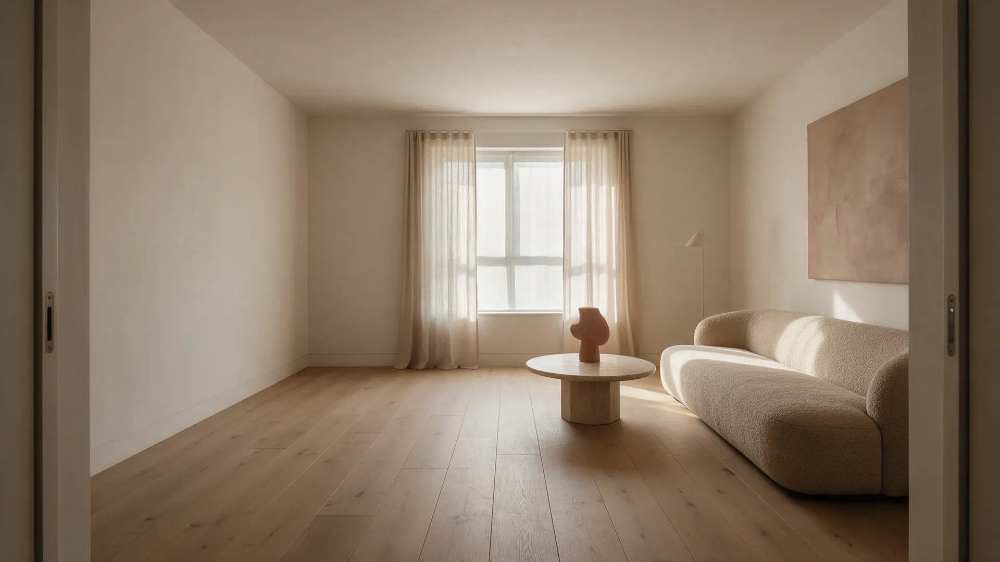
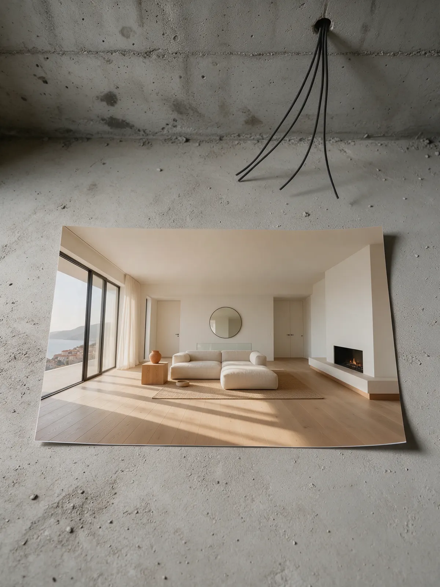
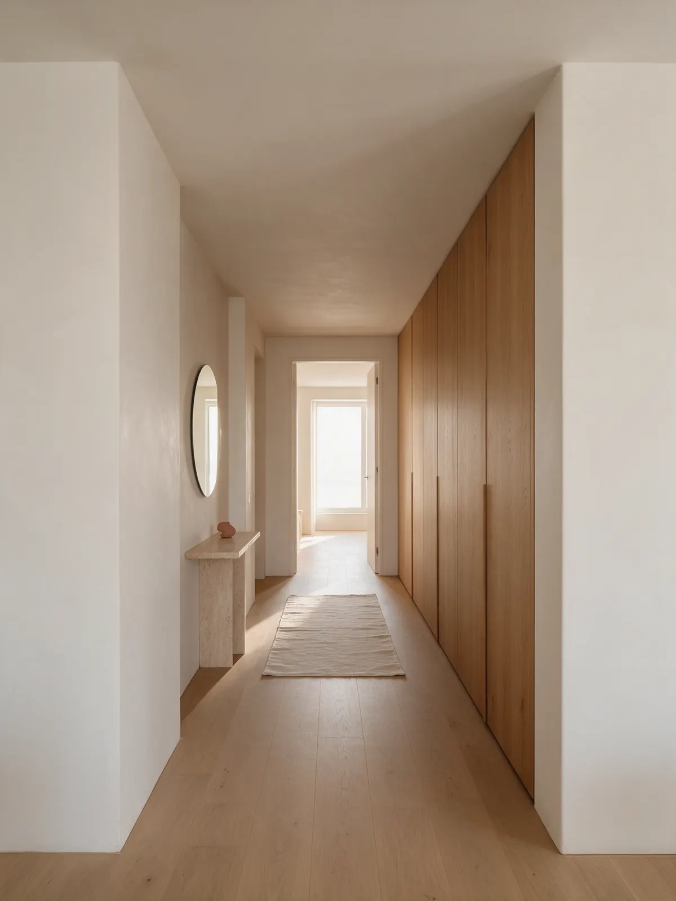
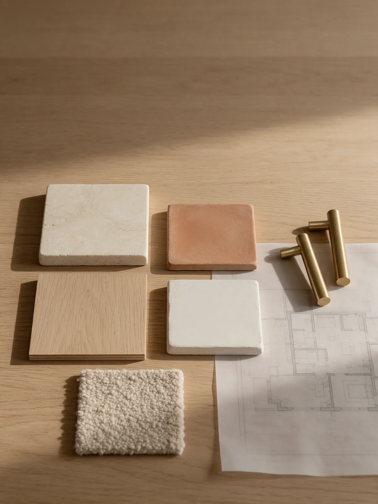
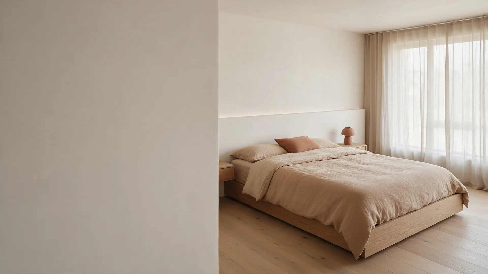
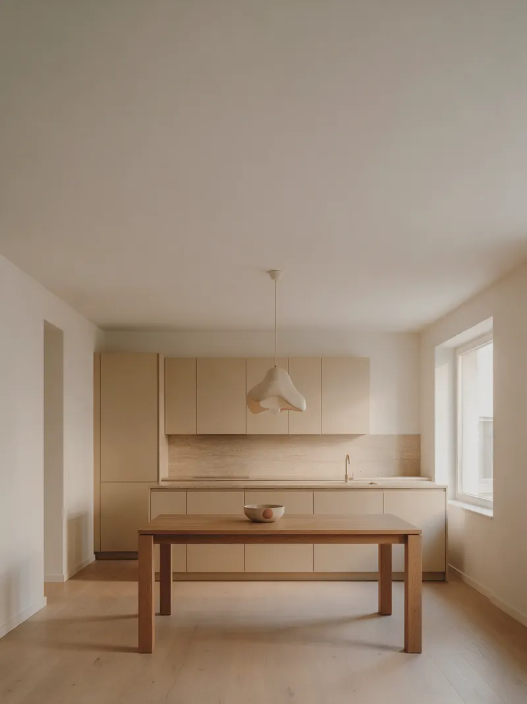
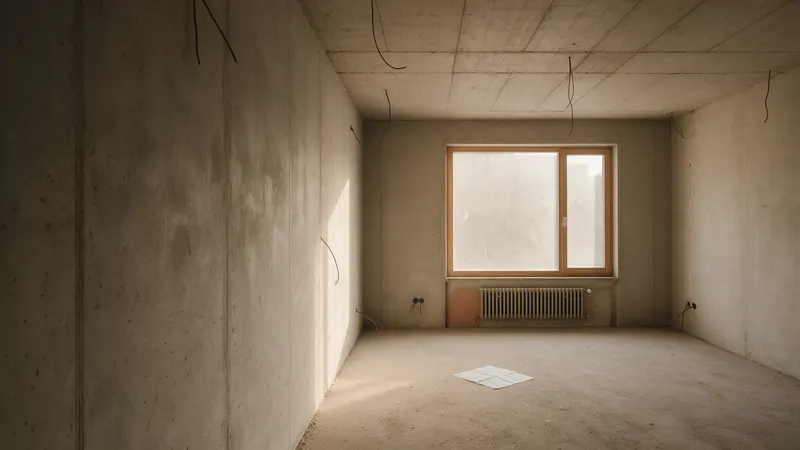
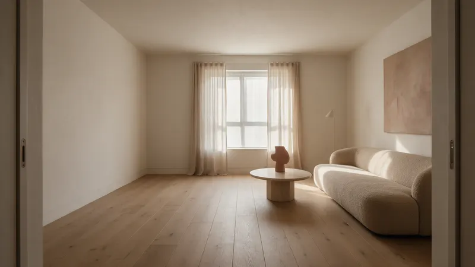
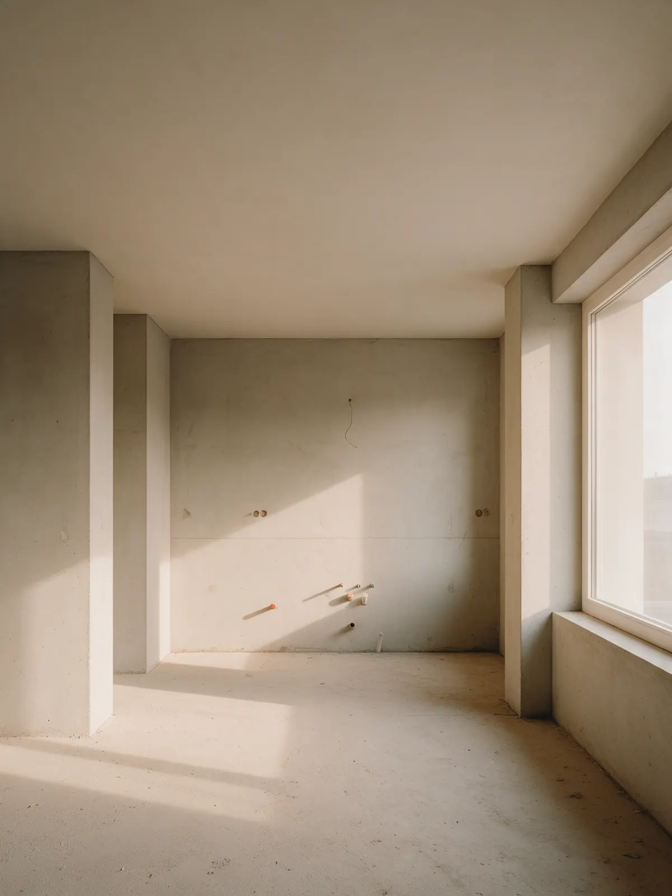

Было: бетон и план от застройщика
Демо для Виктории · по заказу «Разработать сайт на Tilda»
Дизайн интерьера квартир и домов – проект, который реально построить
Планировка, визуализации и рабочие чертежи, по которым строители работают без догадок. Ведём проект до последней розетки.
Пришлите план квартиры – предложим планировку и состав проекта.
Красивая картинка, которую не построить
Визуализация нравится, но строители разводят руками: размеров нет, мебель не встаёт, материалы сняты с производства. Интерьер «по мотивам» получается совсем другим.

Проект, по которому строят
Название студии – студия дизайна интерьера. Проектируем квартиры и дома так, чтобы интерьер с визуализации можно было собрать: с размерами, узлами и спецификацией каждого материала.
Работаем с новостройками и вторичным жильём, от одной комнаты до дома целиком.

Бюджет вырос вдвое по ходу ремонта
Материалы выбирали «на месте», мебель заказывали без размеров, половину переделали. Итоговая сумма не похожа на ту, с которой всё начиналось.
Состав проекта и бюджет – до начала ремонта
Четыре этапа, каждый вы согласуете. Материалы и мебель подбираем под ваш бюджет ещё на бумаге, а не в магазине.
1Замер и планировка
Обмерный план, варианты расстановки, согласуем один
2Концепция и визуализации
Стиль, палитра, материалы, 3D каждого помещения
3Рабочие чертежи
Размеры, электрика, сантехника, полы, потолки, узлы
4Спецификация и надзор
Список материалов и мебели с ценами, выезды на объект

Дизайнер пропал, когда начался ремонт
Проект сдан, альбом распечатан. Дальше вы один на один с бригадой и вопросами, которых в альбоме нет.
Бригада трактует по-своему
Розетки не там, плитка не в ту раскладку
Решения на ходу
Замены материалов без согласования
Спросить не у кого
Дизайнер «уже закончил»
Ведём проект до последней розетки
Авторский надзор
Выезжаем на объект, отвечаем бригаде, проверяем по чертежам
Комплектация
Заказываем материалы и мебель, следим за сроками поставок
Один контакт
Все вопросы по интерьеру – к дизайнеру проекта
Интерьер вне моды на сезон
Спокойная палитра и натуральные материалы

Портфолио из Pinterest
Красивые рендеры без адреса и без фото реализации. Не понять, построено ли хоть что-то.
Только визуализации
Ни одного фото готового объекта
Чужие интерьеры
Картинки из интернета
Было и стало на реальных объектах
-
До 
После -

До 
После
Фото объектов – из материалов студии. В демо стоят иллюстрации.

Было: кухня от застройщика
Бетон, выводы воды и один провод под вытяжку. Отсюда и начинаем.
Форматы работы и цены
Стоимость считаем за м² площади. Точную сумму и сроки фиксируем в договоре после знакомства с объектом.
Планировочное решение
Обмеры, варианты расстановки, план мебели и электрики
ценаДизайн-проект
Концепция, визуализации всех помещений, рабочие чертежи, спецификация
ценаАвторский надзор
Выезды на объект, ответы бригаде, контроль по чертежам
ценаКомплектация
Закупка материалов и мебели, контроль поставок
цена
Вопросы, которые задают до первой встречи
Если вашего вопроса нет – задайте его в сообщении, ответим до встречи.
Сколько длится работа над проектом?
Зависит от площади и состава проекта. Сроки каждого этапа прописываем в договоре: сроки студии.
Можно заказать только планировку?
Да. Планировочное решение – отдельная услуга, с него удобно начать и понять, нужен ли полный проект.
Вы работаете в стиле, который я хочу?
Стиль выбираем вместе на этапе концепции. Показываем референсы и материалы до того, как начнём визуализации.
Сколько правок входит в проект?
условия студии. Каждый этап согласуем, прежде чем переходить к следующему.
Работаете удалённо, из другого города?
условия студии. Замер и надзор обсуждаем отдельно.
Было: бетон и план от застройщика
Осталось здесь.
Стало: интерьер, который вы видели на визуализации
Пришлите план квартиры и пару картинок, которые нравятся. Предложим планировку и состав проекта.
Обсудить проект